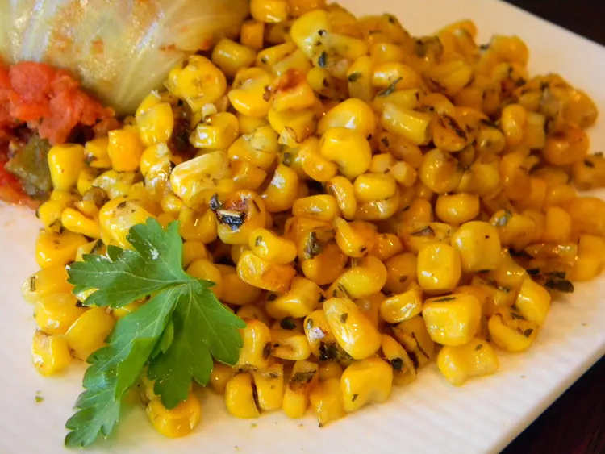

Irresistible Italian Corn

Description
Italian Corn comes with goodness of corn and aromatic Italian seasoning. A great dish to enjoy with your family
and friends.
This food is rich in fiber, minarals and protenes and suitable for children as well.
Ingredients
- 1 1/2 tablespoons of Butter
- 2 1/2 cups of whole kernel sweet corn
- 1 tablespoon of Italian seasoning
- 1 pinch salt
- 1 1 pinch ground black pepper
Steps
- Heat a skillet over high heat
- Heat butter in hot skillet until almost completely melted
- Add corn into the butter and stri well
- Season corn with Italian seasoning, salt, and black pepper.
- Cook seasoned corn until light golden brown, about 5 minutes
- Transfer the coocked corn in to a bowl and enjoy